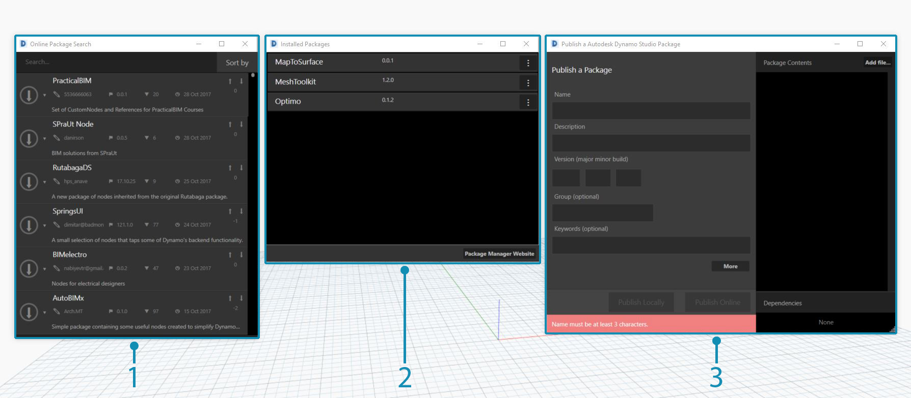
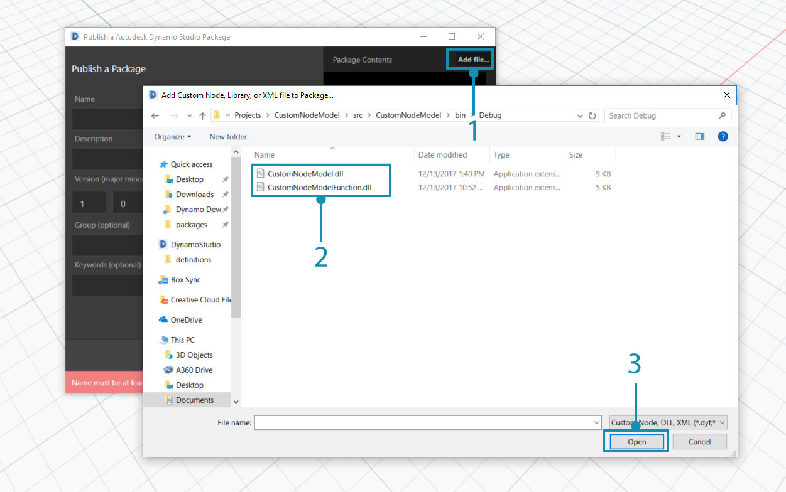
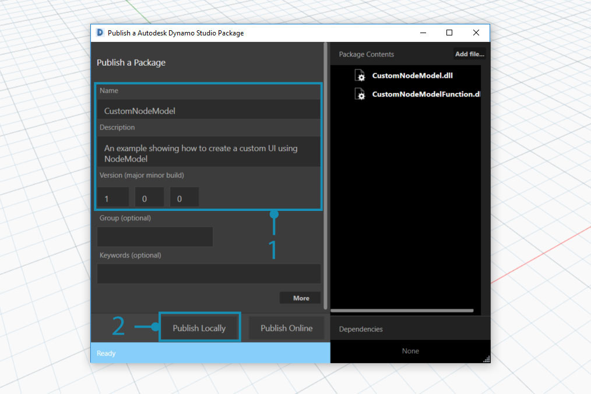
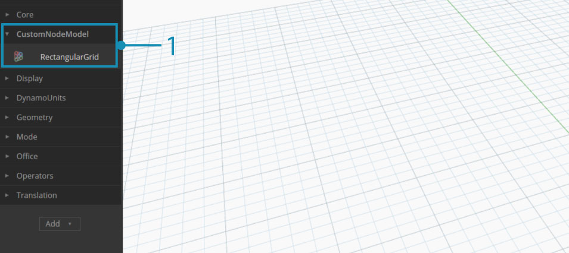
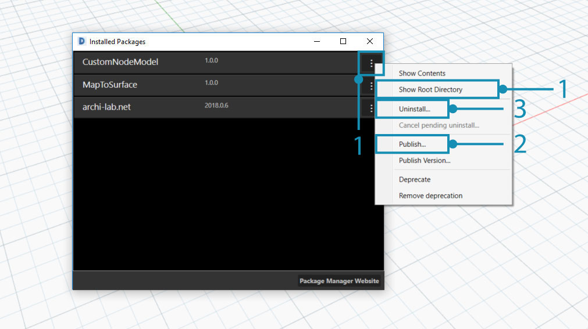
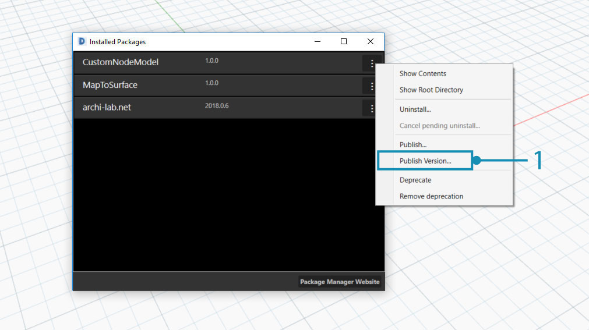
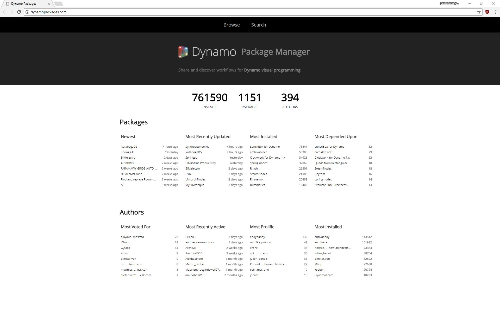

Publish a Package
Packages are a convenient way to store and share nodes with the Dynamo community. A package can contain everything from Custom Nodes created in the Dynamo workspace to NodeModel derived nodes. Packages are published and installed using the Package Manager. In addition to this page the Primer has a general guide on packages.
What is a Package Manager?
The Dynamo Package Manager is a Software Registry (similar to npm) that can be accessed from Dynamo or in a web browser. The Package Manager includes installing, publishing, updating, and viewing packages. Like npm, it maintains different versions of packages. It also helps to manage the dependencies of your project.
In the browser, search for packages and view statistics: http://dynamopackages.com/
- In Dynamo, the Package Manager includes install, publish, and update packages.

- Search for packages online:
Packages > Search for a Package...- View/edit installed packages:
Packages > Manage Packages...- Publish a new package:
Packages > Publish New Package...
Publishing a package
Packages are published from Package Manager within Dynamo. The recommended process is to publish locally, test the package and then publish online to share with the community. Using the NodeModel Case Study, we will go through the necessary steps to publish the RectangularGrid node as a package locally and then on online.
Start Dynamo and select Packages > Publish New Package... to open the Publish a Package window.

- Select
Add file...to browse for files to add to the package- Select the two
.dllfiles from the NodeModel Case Study- Select
Ok
With the files added to the package contents, give the package a name, description, and version. Publishing a package using Dynamo automatically creates a pkg.json file.

A package ready to be published.
- Supply the required information for name, description, and version.
- Publish by clicking "Publish Locally" and select Dynamo's package folder:
AppData\Roaming\Dynamo\Dynamo Core\1.3\packagesto have the node available in Core. Always publish locally until the package is ready to share.
After publishing a package, the nodes will be available in the Dynamo Library under the categoryCustomNodeModel.

- The package we just created in the Dynamo Library
Once the package is ready to publish online, open the Package Manager and choose Publish and then Publish Online.

- To see how Dynamo has formatted the package, click on the three vertical dots to the right of "CustomNodeModel" and choose "Show Root Directory"
- Select
PublishthenPublish Onlinein the "Publish a Dynamo Package" window.- To uninstall a package, select
Uninstall....
How do I update a package?
Updating a package is a similar process to publishing. Open the Package Manager and select Publish Version... on the package that needs to be updated and enter a higher version.

- Select
Publish Versionto update an existing package with new files in the root directory, then choose whether it should be published locally or online.
Package Manager web client
The Package Manager web client is used exclusively for searching and viewing package data such as versioning and download statistics.
The Package Manager web client can be accessed at this link: http://dynamopackages.com/
